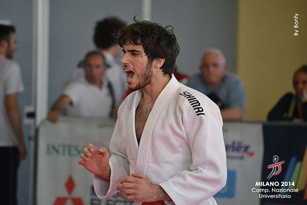
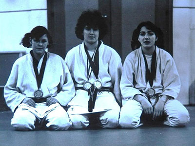

La società Judo Club Castelfranco Veneto è nata nel 1974 per iniziativa del Maestro Renzo Ondei ed è stata affiliata ininterrottamente alla F.I.J.L.K.A.M., federazione del C.O.N.I. dal 1974 ad oggi. È stata società campione d'Italia femminile nel 1978. Di spicco le conquiste di alcuni titoli italiani tra cui uno assoluto. Alcune atlete hanno vestito la maglia azzurra nella rappresentativa della nazionale italiana in Italia e all'estero. Tra i maschi alcuni atleti si sono meritati la convocazione nei centri sportivi militari delle Fiamme Gialle e dell'Esercito. Nel 2000 il Judo Club Castelfranco Veneto ha ottenuto dal C.O.N.I. la "Stella di bronzo al merito sportivo". I risultati continuano a fiorire tutt'ora con un podio nazionale juniores nel 2011 e un argento alla Coppa Italia nel 2014. La palestra è situata nella Scuola Elementare "Zona Est" Via Puccini ( entrata Via Boito ) Castelfranco Veneto (TV).
Silvio Cici
Sonia Crosetta, Nicoletta Baesso, Edy Guidolin
Risulati Nazionali:
2015 7° Campionato Italiano Assoluto - Silvio Cici(-66)
2014 2° Coppa Italia - Silvio Cici (-66kg)
2014 3° Trofeo Internazionale Sankaku (Bergamo) - Silvio Cici (-66kg)
2011 3° Campionato Italiano Juniores - Silvio Cici (-66kg)
2010 3° Trofeo Internazionale Sankaku (Bergamo) - Silvio Cici (-66kg)
1994 2° Coppa Italia - Luigino De Franchi (+100kg)
1992 7° Campionato Italiano Assoluto - Luigino De Franchi (+100kg)
1991 5° Campionato Italiano Assoluto - Luigino De Franchi (+100kg)
1990 2° Campionato Italiano Assoluto - Luigino De Franchi (+100kg)
1980 1° Campionato Italiano Assoluto - Sonia Crosetta (-57kg)
1978 1° Campionato Italiano Assoluto a squadre femminile - Sonia Crosetta, Nicoletta Beasso, Edy Guidolin, Lucia De Luca, Francesa Villanova
1977 1° Campionato Italiano Assoluto - Nicoletta Baesso (-65kg)
1977 7° Campionato Italiano Assoluto - Sonia Crosetta (-57kg)
1977 5° Campionato Italiano Assoluto - Edy Guidolin (-70kg)
1975 2° Coppa Italia - Nicoletta Baessso (-65kg)
1975 3° Campionato Italiano Assoluto - Francesca Villanova (-60kg)